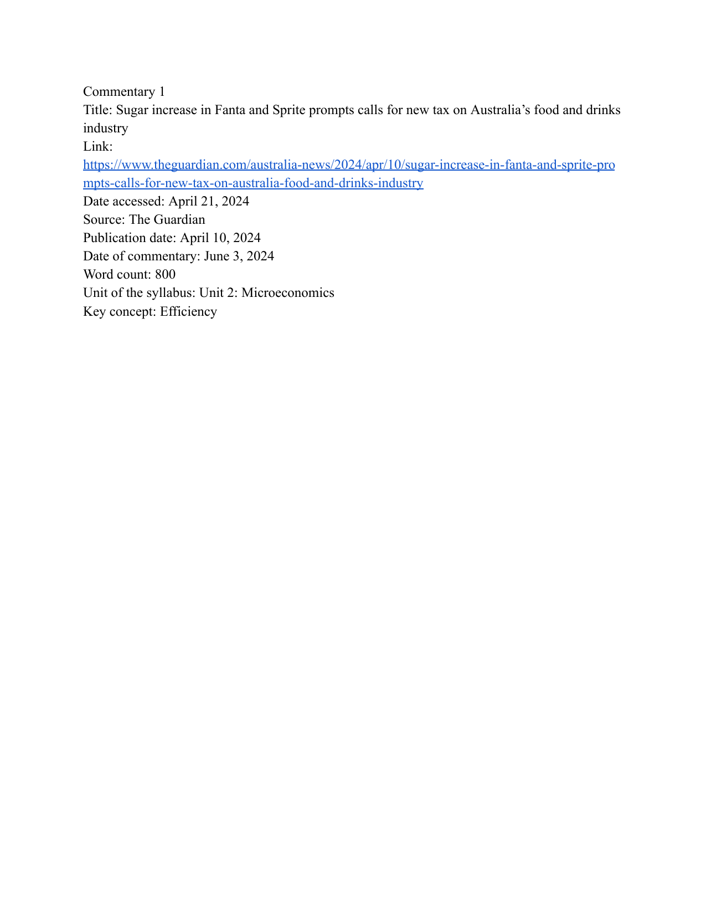
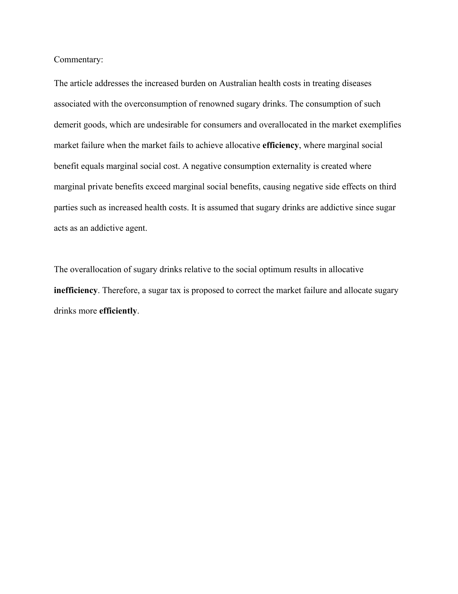
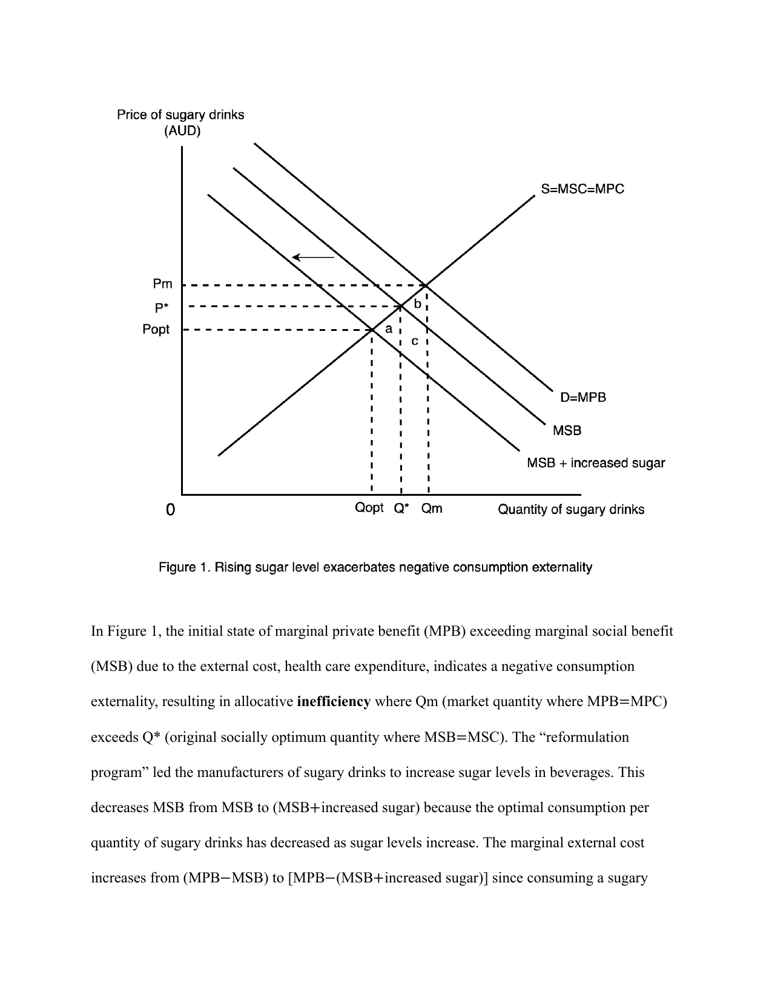
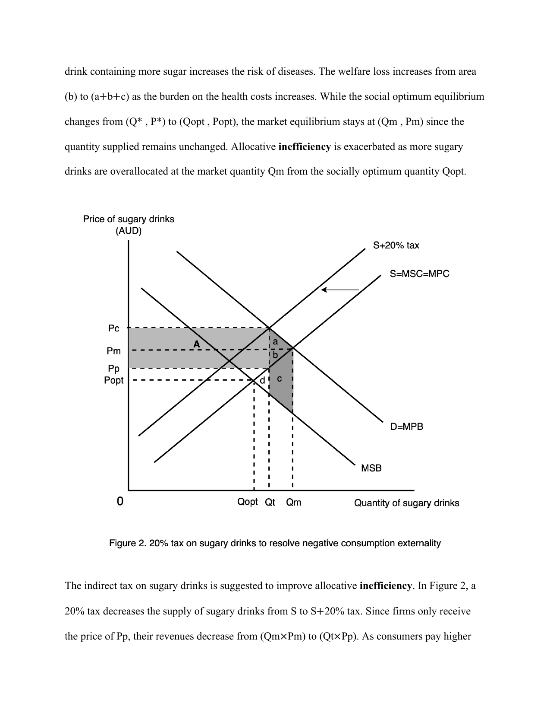
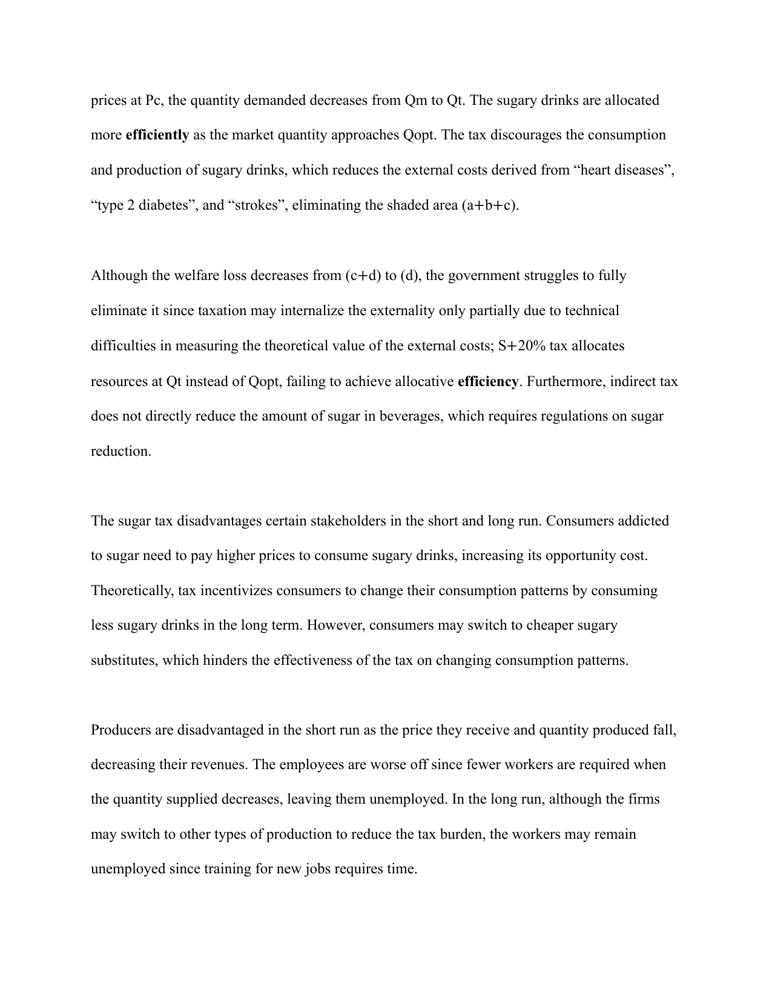

Stage 9
A strong commentary
KZ Micro — an example of what a well-structured, well-executed IA looks like.
Read this carefully. Notice how the structure maps onto the six sections, how the diagrams are labelled, how the key concept runs throughout, and how the evaluation section develops multiple CLASPP points. What do you notice? What can you learn from it?
This is a model, not a template. Don't copy the structure of the argument — copy the standard of the technique.




